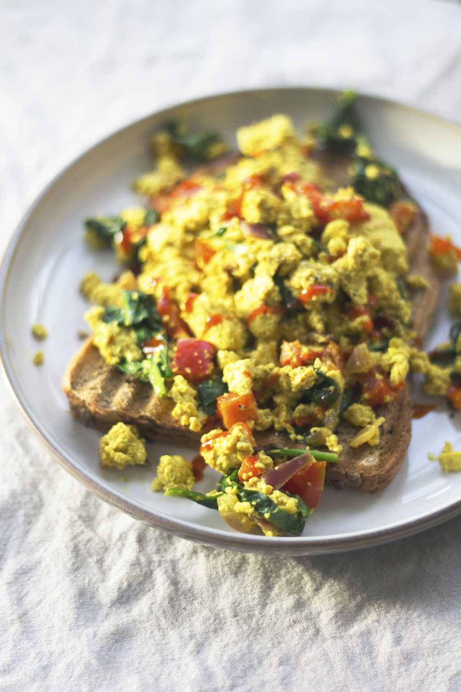

Scrambled Tofu

Description
Here's another extremely quick and easy tofu recipe. Full or protein and great as part of a traditional breakfast instead of scrambled eggs, or to be added to breakfast burritos. Great by itself, but even better if you sautee some vegetables before adding the tofu.
Ingredients:
- 1 tbsp olive oil
- 1 block firm tofu
- 2 tbsp nutritional yeast
- 1/2 tsp black (kala namak) salt (or regular salt - the black salt give it an eggy taste)
- 1/4 tsp turmeric
- 1/4 tsp garlic powder
- 2 tbsp non-dairy milk (unsweetened)
Directions:
- Heat oil in pan. Then mash block of tofu in pan or crumble with fingers. Cook, stirring frequently, until water is mostly evaporated.
- Add in dry ingredients and cook, stirring constantly, about five mor minutes.
- Add non-dairy milk, stir, and serve.